| Variavel | Descricao | Classificacao |
|---|---|---|
| id_obra | Identificador da obra | Identificador |
| tipo_obra | Residencial, Comercial, Industrial ou Infraestrutura | Qualitativa Nominal |
| regiao | Região do Brasil | Qualitativa Nominal |
| area_construida | Área construída, em m² | Quantitativa Contínua |
| custo_total | Custo total da obra, em R$ | Quantitativa Contínua |
| prazo_meses | Duração da obra, em meses | Quantitativa Discreta |
| resistencia_mpa | Resistência à compressão do concreto, em MPa | Quantitativa Contínua |
| consumo_cimento | Consumo de cimento, em kg/m³ | Quantitativa Contínua |
| indice_falhas | Número de falhas registradas | Quantitativa Discreta |
| satisfacao | Satisfação do cliente (0 a 10) | Quantitativa Discreta/Contínua |
| sustentavel | Uso de práticas sustentáveis (Sim/Não) | Qualitativa Nominal |


Relatório de Aula Prática 04 - Visualização Gráfica de Dados em Engenharia Civil
Estatística e Probabilidade
Prof. Ben Dêivide (DEFIM/CAP/UFSJ)
1 📌 Introdução
A comunicação visual de resultados é uma competência tão importante quanto o cálculo em si na prática da Engenharia Civil. Um relatório técnico bem fundamentado, mas apresentado apenas em tabelas numéricas, dificilmente sensibiliza clientes, gestores e equipes multidisciplinares da mesma forma que um gráfico bem construído, que sintetiza um grande volume de dados em uma leitura imediata.
Neste relatório, assume-se o papel de um engenheiro responsável pela análise gráfica do controle tecnológico de uma empresa que executa obras em diferentes regiões do Brasil. A partir de uma base de dados com 300 obras — contemplando tipo, região, área construída, custo total, prazo, resistência do concreto, consumo de cimento, índice de falhas, satisfação do cliente e adoção de práticas sustentáveis —, exploram-se os principais sistemas gráficos da linguagem R:
- Base R: funções gráficas nativas (
plot(),hist(),boxplot(),barplot()), simples e sem dependência de pacotes externos; - ggplot2: implementação da Grammar of Graphics, que permite construir gráficos por camadas (dados +
aes()+geom_*()+ facetas + temas); - plotly: camada de interatividade sobre gráficos estáticos (tooltips, zoom, hover);
- highcharter: gráficos interativos avançados, com temas, animações e múltiplas séries;
- leaflet: mapas interativos para representação geográfica dos dados.
O objetivo não é apenas produzir gráficos, mas escolher — e justificar — o sistema gráfico e a geometria mais adequados a cada análise, interpretando os resultados à luz do contexto profissional da Engenharia Civil.
2 🎯 Objetivos
2.1 Objetivo geral
Desenvolver a capacidade de explorar, visualizar e comunicar dados de uma situação prática da Engenharia Civil, utilizando os principais sistemas gráficos da linguagem R (Base R, ggplot2, plotly, highcharter e leaflet) para subsidiar decisões técnicas e gerenciais.
2.2 Objetivos específicos
- Conhecer a estrutura da base de dados de 300 obras, verificando dimensões, tipos de variáveis e qualidade dos dados (valores ausentes e discrepantes);
- Construir gráficos de dispersão, histograma, boxplot e barras utilizando o Base R, com personalização de título, eixos, cores e símbolos;
- Reconstruir e ampliar essas análises com a gramática de gráficos do ggplot2, empregando mapeamentos estéticos, camadas, facetas, escalas e temas;
- Converter gráficos estáticos em interativos com plotly e construir gráficos interativos diretamente com
plot_ly(); - Explorar recursos avançados de interatividade com highcharter (temas, tooltips, zoom, múltiplas séries);
- Construir mapas interativos com leaflet, incluindo marcadores, popups e círculos de destaque;
- Analisar questões próximas da prática profissional, comparando grupos de obras e investigando relações entre variáveis técnicas;
- Consolidar, em um painel gráfico integrado, uma comunicação clara do perfil das obras a um público técnico e gerencial.
3 📚 Fundamentação Teórica
3.1 Sistemas Gráficos na Linguagem R
A linguagem R oferece diferentes paradigmas para a construção de gráficos, cada um mais adequado a um propósito específico (Batista e Oliveira, 2022):
| Sistema | Uso principal | Vantagem |
|---|---|---|
| Base R | Gráficos rápidos e didáticos | Simplicidade, sem dependência de pacotes |
| ggplot2 | Gráficos estáticos com gramática de gráficos | Flexibilidade, camadas, facetas, temas |
| plotly | Interatividade a partir de gráficos ggplot | Tooltips, zoom, hover |
| highcharter | Gráficos interativos avançados | Temas, animações, exportação, múltiplas séries |
| leaflet | Mapas interativos | Marcadores, popups, camadas geográficas |
3.2 A Gramática de Gráficos do ggplot2
O pacote ggplot2 (Wickham, 2016) implementa a Grammar of Graphics, segundo a qual todo gráfico pode ser decomposto em componentes combináveis:
\[ \begin{aligned} \text{GRÁFICO} = \ & \text{DADOS} + \text{MAPEAMENTOS} + \text{GEOMETRIAS} + \text{CAMADAS} \ + \\ & \text{ESCALAS} + \text{FACETAS} + \text{COORDENADAS} + \text{TEMA} \end{aligned} \]
Diferentemente do Base R — em que cada tipo de gráfico corresponde a uma função isolada (plot(), hist(), boxplot()) —, o ggplot2 permite construir o gráfico progressivamente, adicionando camadas com o operador +. A função aes() (aesthetic mappings) estabelece a relação entre variáveis dos dados e características visuais (posição, cor, tamanho, forma), distinguindo-se da simples configuração (a estética é fixa, ex.: color = "blue").
3.3 Interatividade: plotly e highcharter
O pacote plotly (Sievert, 2020) permite converter qualquer gráfico ggplot2 em um objeto interativo por meio de ggplotly(), ou construir gráficos interativos diretamente com plot_ly(). Já o highcharter (Kunst, 2022) é uma interface R para a biblioteca JavaScript Highcharts, oferecendo recursos avançados de customização (temas, tooltips personalizados, zoom, múltiplas séries) especialmente úteis em painéis executivos.
3.4 Mapas Interativos: leaflet
O pacote leaflet (Cheng, Karambelkar e Xie, 2023) fornece uma interface para a biblioteca JavaScript Leaflet, permitindo a construção de mapas em camadas: mapa base (ruas ou satélite), marcadores (pontos), polígonos (regiões), linhas (trajetos) e popups (informações). É a ferramenta natural para representar a distribuição geográfica de obras, sondagens ou empreendimentos de Engenharia Civil.
3.5 Boxplot, Histograma e Correlação
O boxplot representa a distribuição de uma variável por meio dos quartis (\(Q_1\), mediana, \(Q_3\)), da amplitude interquartil (\(IQR = Q_3 - Q_1\)) e dos limites de detecção de outliers (\(Q_1 - 1{,}5 \cdot IQR\) e \(Q_3 + 1{,}5 \cdot IQR\)). O histograma representa a distribuição de frequências de uma variável contínua agrupada em classes, permitindo avaliar simetria e presença de valores discrepantes (Batista, 2024). O coeficiente de correlação de Pearson (\(r\)), por sua vez, quantifica o grau de associação linear entre duas variáveis quantitativas, variando de \(-1\) (associação negativa perfeita) a \(+1\) (associação positiva perfeita), sendo \(r \approx 0\) indicativo de ausência de associação linear.
4 ⚙️ Metodologia
4.1 Infraestrutura Computacional
O desenvolvimento deste relatório foi realizado em ambiente R (versão 4.4+), com o auxílio do RStudio IDE e editoração via Quarto (.qmd), utilizando os pacotes ggplot2, dplyr, plotly, highcharter, leaflet e scales. Sempre que possível, utilizou-se o operador |> (pipe nativo do R) para encadear as etapas de transformação dos dados com dplyr antes da etapa de visualização, seguindo o fluxo:
dados |>
group_by(variavel_categorica) |>
summarise(media = mean(variavel_numerica)) |>
ggplot(aes(x = variavel_categorica, y = media)) +
geom_col()4.2 Caracterização da Base de Dados (dados_engenharia_civil.csv)
A base contempla informações de 300 obras de Engenharia Civil executadas em diferentes regiões do Brasil, contendo 11 variáveis operacionais:
5 🔍 Resultados e Discussão
5.1 Importação e Panorama Inicial da Base
A importação da base foi realizada com read.csv(), e a integridade da leitura foi verificada por meio de head(), tail() e dim():
Código
# Importação da base de dados
dados <- read.csv("dados_engenharia_civil.csv")
dados <- dados |>
mutate(custo_m2 = round(custo_total / area_construida, 2))
# Visualização das primeiras e últimas linhas e dimensões
head(dados) id_obra tipo_obra regiao area_construida custo_total prazo_meses
1 1 Industrial Nordeste 802.5 1608826 36
2 2 Comercial Nordeste 791.5 2870992 20
3 3 Residencial Sul 575.4 1683606 13
4 4 Residencial Sudeste 1156.6 3469884 23
5 5 Comercial Centro-Oeste 581.5 2176259 28
6 6 Residencial Sudeste 606.9 1350551 27
resistencia_mpa consumo_cimento indice_falhas satisfacao sustentavel custo_m2
1 26.80 393.1 1 6.2 Sim 2004.77
2 28.05 394.1 2 7.8 Sim 3627.28
3 33.12 387.0 4 3.8 Não 2925.97
4 31.06 368.7 1 3.8 Sim 3000.07
5 28.29 389.4 2 6.7 Sim 3742.49
6 32.94 329.8 4 1.0 Sim 2225.33Código
tail(dados) id_obra tipo_obra regiao area_construida custo_total prazo_meses
295 295 Industrial Nordeste 586.3 1420749 11
296 296 Comercial Sudeste 800.2 2983588 18
297 297 Comercial Nordeste 360.5 1229413 32
298 298 Comercial Norte 785.3 2676964 7
299 299 Residencial Nordeste 430.3 1533911 20
300 300 Comercial Norte 405.2 1415176 35
resistencia_mpa consumo_cimento indice_falhas satisfacao sustentavel
295 33.60 390.4 4 2.5 Não
296 29.15 351.1 3 4.3 Sim
297 28.97 364.4 2 7.8 Sim
298 30.53 295.0 2 3.8 Sim
299 31.88 308.2 3 5.0 Não
300 28.53 378.9 2 8.7 Não
custo_m2
295 2423.25
296 3728.55
297 3410.30
298 3408.84
299 3564.75
300 3492.54Código
dim(dados)[1] 300 12A base contém 300 observações (obras) e 11 variáveis, número confirmado tanto por dim() quanto por nrow()/ncol(). A inspeção das primeiras e últimas linhas mostra observações coerentes com o dicionário de variáveis descrito na metodologia, confirmando que a importação foi realizada corretamente.
[1] 300[1] 12A estrutura interna da base foi então avaliada com str() e glimpse():
Código
str(dados)'data.frame': 300 obs. of 12 variables:
$ id_obra : int 1 2 3 4 5 6 7 8 9 10 ...
$ tipo_obra : chr "Industrial" "Comercial" "Residencial" "Residencial" ...
$ regiao : chr "Nordeste" "Nordeste" "Sul" "Sudeste" ...
$ area_construida: num 802 792 575 1157 582 ...
$ custo_total : num 1608826 2870992 1683606 3469884 2176259 ...
$ prazo_meses : int 36 20 13 23 28 27 20 15 35 15 ...
$ resistencia_mpa: num 26.8 28.1 33.1 31.1 28.3 ...
$ consumo_cimento: num 393 394 387 369 389 ...
$ indice_falhas : int 1 2 4 1 2 4 1 2 0 1 ...
$ satisfacao : num 6.2 7.8 3.8 3.8 6.7 1 9.7 8.8 7.6 5.1 ...
$ sustentavel : chr "Sim" "Sim" "Não" "Sim" ...
$ custo_m2 : num 2005 3627 2926 3000 3742 ...Código
dplyr::glimpse(dados)Rows: 300
Columns: 12
$ id_obra <int> 1, 2, 3, 4, 5, 6, 7, 8, 9, 10, 11, 12, 13, 14, 15, 16,…
$ tipo_obra <chr> "Industrial", "Comercial", "Residencial", "Residencial…
$ regiao <chr> "Nordeste", "Nordeste", "Sul", "Sudeste", "Centro-Oest…
$ area_construida <dbl> 802.5, 791.5, 575.4, 1156.6, 581.5, 606.9, 572.7, 1380…
$ custo_total <dbl> 1608825.8, 2870991.8, 1683605.5, 3469884.2, 2176258.5,…
$ prazo_meses <int> 36, 20, 13, 23, 28, 27, 20, 15, 35, 15, 36, 23, 32, 12…
$ resistencia_mpa <dbl> 26.80, 28.05, 33.12, 31.06, 28.29, 32.94, 35.05, 42.62…
$ consumo_cimento <dbl> 393.1, 394.1, 387.0, 368.7, 389.4, 329.8, 422.6, 347.3…
$ indice_falhas <int> 1, 2, 4, 1, 2, 4, 1, 2, 0, 1, 0, 1, 2, 1, 1, 3, 1, 1, …
$ satisfacao <dbl> 6.2, 7.8, 3.8, 3.8, 6.7, 1.0, 9.7, 8.8, 7.6, 5.1, 2.6,…
$ sustentavel <chr> "Sim", "Sim", "Não", "Sim", "Sim", "Sim", "Não", "Não"…
$ custo_m2 <dbl> 2004.77, 3627.28, 2925.97, 3000.07, 3742.49, 2225.33, …O R reconheceu como quantitativas (int/num) as variáveis id_obra, area_construida, custo_total, prazo_meses, resistencia_mpa, consumo_cimento, indice_falhas e satisfacao, pois seus valores são numéricos e admitem operações aritméticas (soma, média, etc.). Já tipo_obra, regiao e sustentavel foram reconhecidas como qualitativas (chr/character), pois representam categorias/rótulos textuais, mesmo sustentavel assumindo apenas dois valores (“Sim”/“Não”). Note-se que id_obra, embora numérica, é um identificador de registro, e não deve ser interpretada como variável quantitativa para fins analíticos.
O resumo estatístico obtido com summary() complementa esse diagnóstico:
Código
summary(dados) id_obra tipo_obra regiao area_construida
Min. : 1.00 Length :300 Length :300 Min. : 45.9
1st Qu.: 75.75 N.unique : 4 N.unique : 5 1st Qu.: 629.4
Median :150.50 N.blank : 0 N.blank : 0 Median : 909.1
Mean :150.50 Min.nchar: 9 Min.nchar: 3 Mean : 873.0
3rd Qu.:225.25 Max.nchar: 14 Max.nchar: 12 3rd Qu.:1087.5
Max. :300.00 Max. :1855.9
custo_total prazo_meses resistencia_mpa consumo_cimento
Min. : 112443 Min. : 6.00 Min. :17.82 Min. :188.4
1st Qu.:1754793 1st Qu.:14.00 1st Qu.:28.97 1st Qu.:312.0
Median :2548002 Median :20.00 Median :31.94 Median :344.4
Mean :2689385 Mean :20.98 Mean :32.18 Mean :341.3
3rd Qu.:3475290 3rd Qu.:29.00 3rd Qu.:35.51 3rd Qu.:373.4
Max. :6526477 Max. :36.00 Max. :44.43 Max. :467.6
indice_falhas satisfacao sustentavel custo_m2
Min. :0.000 Min. : 1.00 Length :300 Min. :1724
1st Qu.:1.000 1st Qu.: 3.50 N.unique : 2 1st Qu.:2495
Median :2.000 Median : 5.70 N.blank : 0 Median :2966
Mean :2.203 Mean : 5.74 Min.nchar: 3 Mean :3102
3rd Qu.:3.000 3rd Qu.: 8.10 Max.nchar: 3 3rd Qu.:3672
Max. :7.000 Max. :10.00 Max. :5509 Entre as informações que chamam atenção, destaca-se que a área construída varia de 45,9 m² a 1.855,9 m², amplitude compatível com obras de pequeno porte (reformas residenciais) até grandes empreendimentos de infraestrutura, e que o custo total varia de aproximadamente R$ 112 mil a R$ 6,53 milhões, refletindo a heterogeneidade de portes de obra na amostra. O prazo varia de 6 a 36 meses, faixa plausível para obras civis de médio/grande porte, e a satisfação do cliente varia de 1 a 10, dentro da escala esperada (0 a 10). A resistência do concreto, por sua vez, varia de 17,82 MPa a 44,43 MPa: o valor mínimo está abaixo do fck mínimo usual de 20 MPa exigido pela NBR 6118 para concreto estrutural, o que constitui um ponto de atenção — pode indicar um concreto de uso não estrutural (contrapiso, por exemplo) ou um caso pontual de não conformidade. Fora essa exceção, não foram identificados valores manifestamente incompatíveis com o contexto da Engenharia Civil, como áreas ou custos negativos.
Por fim, verificou-se a existência de valores ausentes na base:
Código
sum(is.na(dados))[1] 0Código
colSums(is.na(dados)) id_obra tipo_obra regiao area_construida custo_total
0 0 0 0 0
prazo_meses resistencia_mpa consumo_cimento indice_falhas satisfacao
0 0 0 0 0
sustentavel custo_m2
0 0 Código
dados[!complete.cases(dados), ] [1] id_obra tipo_obra regiao area_construida
[5] custo_total prazo_meses resistencia_mpa consumo_cimento
[9] indice_falhas satisfacao sustentavel custo_m2
<0 linhas> (ou row.names de comprimento 0)A base não apresenta valores ausentes em nenhuma das 11 variáveis: sum(is.na(dados)) retorna 0, e o filtro por linhas incompletas retorna um data frame vazio. Isso é coerente com o enunciado desta atividade, cujo foco é a exploração visual, e não a limpeza de dados — diferentemente do Relatório 3.
5.2 Dispersão entre Área Construída e Custo Total (Base R)
Código
# Escala em Milhões de Reais, pontos estilizados e eixos na horizontal
plot(
dados$area_construida, dados$custo_total / 1e6,
main = "Relação entre Área Construída e Custo Total das Obras",
xlab = "Área Construída (m²)",
ylab = "Custo Total (em milhões de R$)",
pch = 21,
bg = "#4682B4",
col = "#1C39BB",
cex = 1.0,
las = 1
)
grid(col = "gray85", lty = "dotted")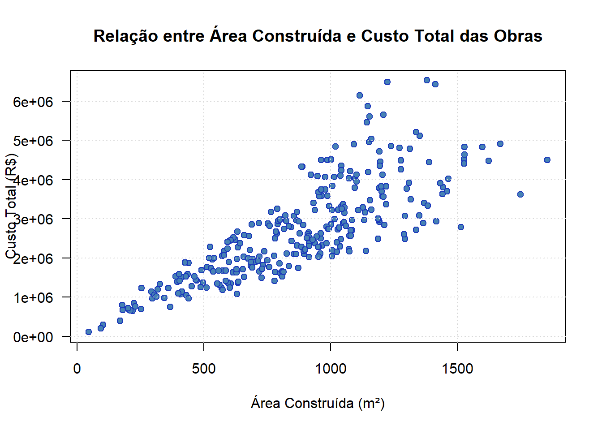
O gráfico de dispersão sugere uma relação positiva clara entre área construída e custo total — quanto maior a obra, maior o custo, como esperado. Ainda assim, existem obras que se afastam da tendência geral: algumas apresentam custo bem acima do esperado para o seu tamanho (provavelmente obras de infraestrutura, com maior custo por m² devido à complexidade técnica), e outras, custo abaixo do esperado (possivelmente obras industriais, mais padronizadas). Essa hipótese é aprofundada mais adiante, ao segmentar a mesma relação por tipo de obra e por região.
5.3 Distribuição da Resistência à Compressão do Concreto (Base R)
Código
hist(
dados$resistencia_mpa,
breaks = 12,
col = "lightskyblue",
border = "white",
main = "Distribuição da Resistência à Compressão do Concreto",
xlab = "Resistência (MPa)",
ylab = "Frequência"
)
abline(v = mean(dados$resistencia_mpa), col = "red", lwd = 2, lty = 2)
legend("topright", legend = "Média", col = "red", lty = 2, lwd = 2, bty = "n")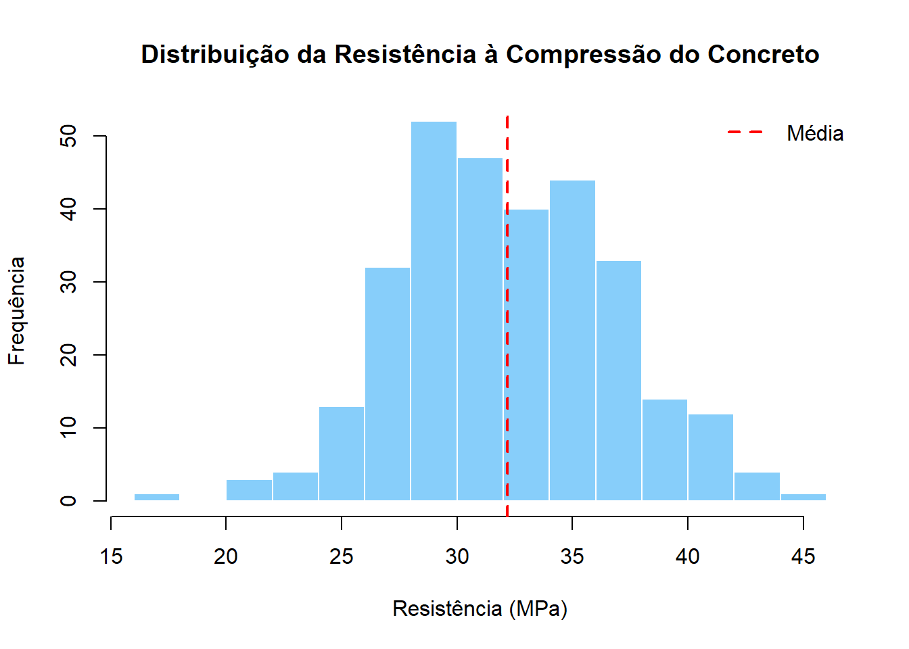
A distribuição da resistência à compressão do concreto se aproxima de uma forma simétrica em torno da média (32,18 MPa) — média e mediana são muito próximas (31,94 MPa), sem uma assimetria acentuada visível. A maior parte dos valores concentra-se na faixa típica de projeto (entre 25 e 40 MPa). Há, contudo, um único valor (17,82 MPa) abaixo do intervalo usual, já identificado no panorama inicial da base, que foge do padrão de concreto estrutural (fck ≥ 20 MPa).
5.4 Custo Total por Tipo de Obra (Base R)
Código
# Escala em Milhões de Reais e eixos na horizontal
boxplot(
(custo_total / 1e6) ~ tipo_obra,
data = dados,
col = c("lightsalmon", "lightgreen", "lightskyblue", "khaki"),
main = "Custo Total por Tipo de Obra",
xlab = "Tipo de Obra",
ylab = "Custo Total (em milhões de R$)",
las = 1
)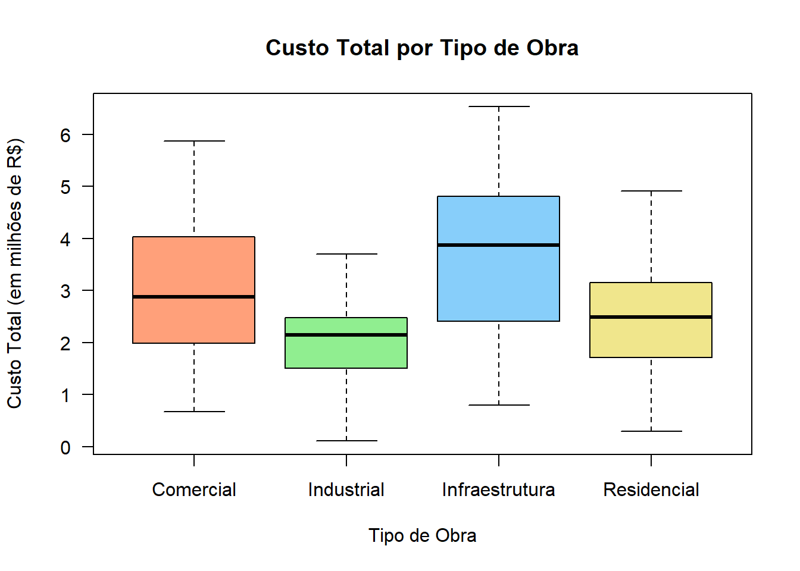
As obras de Infraestrutura apresentam a maior mediana de custo, seguidas por Comercial, Residencial e, por fim, Industrial, com a menor mediana. Infraestrutura também exibe a maior dispersão absoluta (maior amplitude interquartil), coerente com a maior complexidade e variabilidade técnica desse tipo de obra (pontes, rodovias, saneamento). Não há outliers evidentes fora dos limites de 1,5×IQR em nenhuma das quatro categorias — a variabilidade de custo, embora relevante, decorre principalmente da dispersão natural dentro de cada grupo, e não de valores extremos isolados.
5.5 Distribuição Geográfica das Obras por Região (Base R)
Código
contagem_regiao <- table(dados$regiao)
barplot(
contagem_regiao,
col = heat.colors(length(contagem_regiao)),
main = "Número de Obras por Região",
xlab = "Região",
ylab = "Número de Obras"
)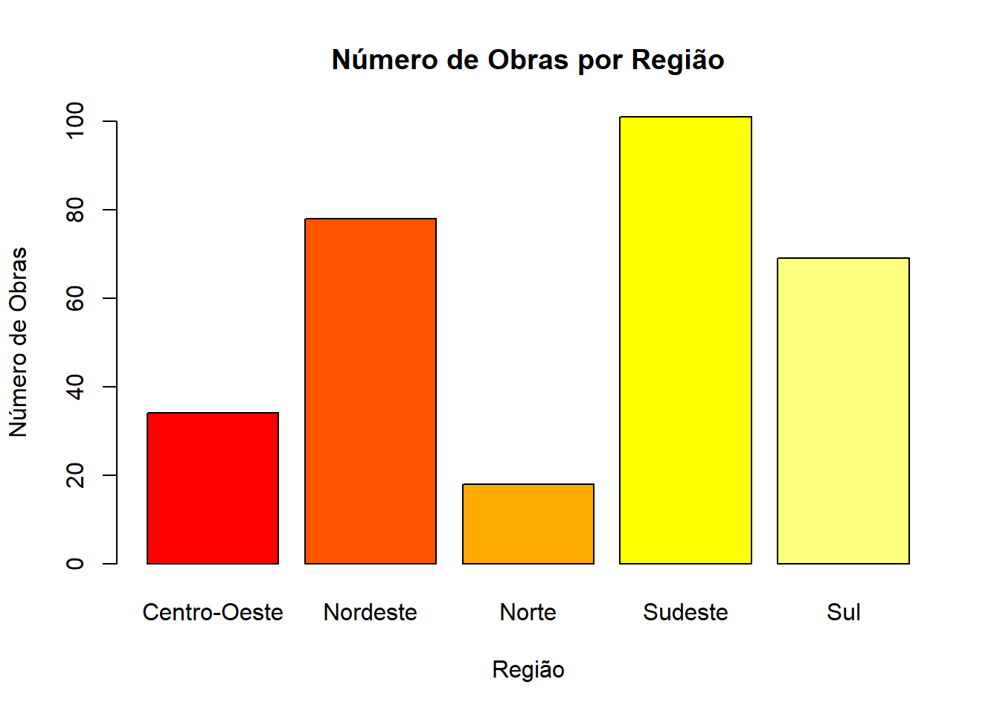
A região Sudeste concentra o maior número de obras, seguida por Nordeste e Sul; Centro-Oeste e, principalmente, Norte apresentam a menor quantidade de obras registradas. Esse resultado é coerente com a distribuição real da atividade da construção civil no Brasil, historicamente concentrada nas regiões Sudeste e Sul (maior densidade populacional e econômica) e no Nordeste (forte expansão do setor nas últimas décadas), enquanto a região Norte apresenta menor volume de empreendimentos, refletindo desafios logísticos e menor densidade urbana.
5.6 Dispersão Segmentada por Tipo de Obra (ggplot2)
Código
# Adição de escala formatada em R$ no eixo Y e cores corporativas
ggplot(dados, aes(x = area_construida, y = custo_total, color = tipo_obra)) +
geom_point(alpha = 0.75, size = 2.5) +
scale_color_manual(values = c(
"Comercial" = "#2E86AB",
"Industrial" = "#A23B5B",
"Infraestrutura" = "#F18F01",
"Residencial" = "#C73E1D"
)) +
scale_y_continuous(labels = scales::label_number(prefix = "R$ ", big.mark = ".", decimal.mark = ",")) +
labs(
title = "Relação entre Área Construída e Custo Total",
subtitle = "Segmentação por tipologia construtiva",
x = "Área Construída (m²)",
y = "Custo Total (R$)",
color = "Tipo de Obra"
) +
theme_bw() +
theme(
panel.grid.minor = element_blank(),
legend.position = "bottom"
)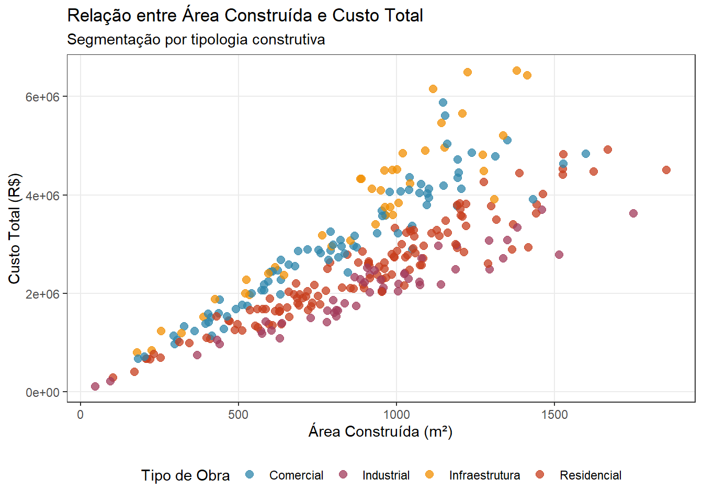
Ao separar por tipo de obra, o padrão de relação positiva entre área e custo observado anteriormente se mantém dentro de cada grupo, mas fica evidente que as retas de tendência de cada categoria têm inclinações e níveis diferentes: as obras de Infraestrutura se destacam por apresentar custo consistentemente mais alto para uma mesma área construída, enquanto Industrial tende a ocupar a faixa de menor custo por m². Isso confirma que grande parte da dispersão observada no gráfico de dispersão do Base R decorre da heterogeneidade entre tipos de obra, e não de comportamento aleatório.
5.7 Custo por Tipo de Obra com a Gramática de Gráficos (ggplot2)
Código
# Adição de escala formatada em R$ no eixo Y
ggplot(dados, aes(x = tipo_obra, y = custo_total, fill = tipo_obra)) +
geom_boxplot() +
scale_y_continuous(labels = scales::label_number(prefix = "R$ ", big.mark = ".", decimal.mark = ",")) +
labs(
title = "Custo Total por Tipo de Obra",
x = "Tipo de Obra",
y = "Custo Total (R$)"
) +
theme_minimal() +
theme(legend.position = "none")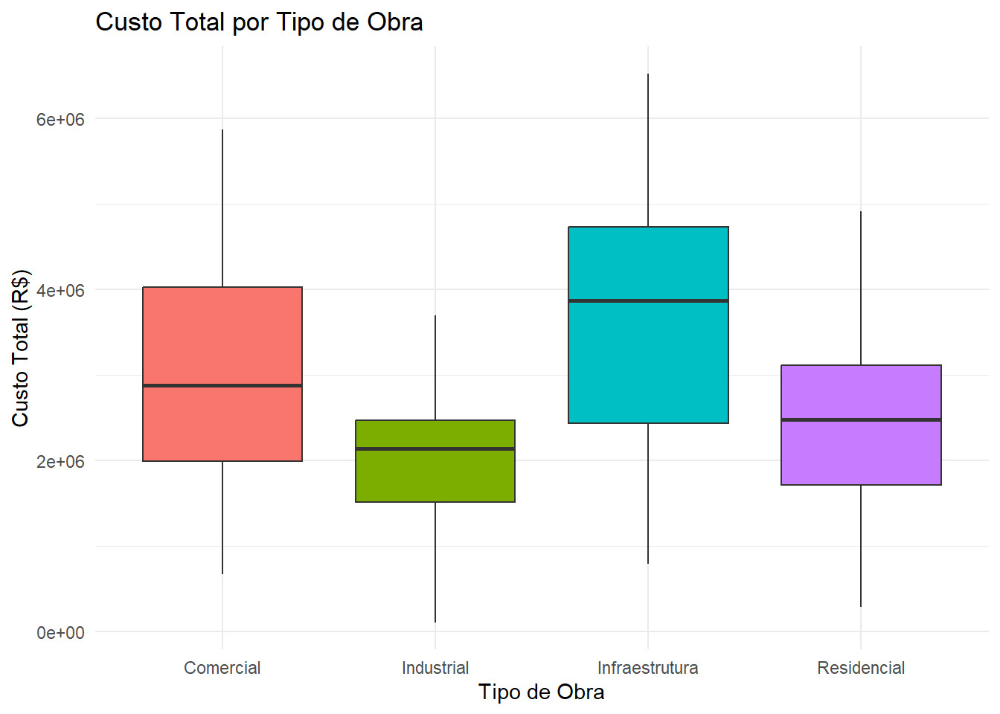
O resultado confirma a leitura já feita no boxplot do Base R (Infraestrutura com maior mediana e dispersão), mas o ggplot2 oferece vantagens visuais relevantes: preenchimento colorido por categoria sem esforço adicional de codificação manual de cores, temas prontos (theme_minimal()) que melhoram a legibilidade, e maior facilidade para adicionar camadas posteriores — por exemplo, sobrepor os pontos individuais com geom_jitter(), o que tornaria a comparação ainda mais rica.
5.8 Densidade da Resistência do Concreto (ggplot2)
Código
ggplot(dados, aes(x = resistencia_mpa)) +
geom_histogram(aes(y = after_stat(density)), bins = 12,
fill = "lightskyblue", color = "white") +
geom_density(color = "darkblue", linewidth = 1) +
labs(
title = "Distribuição da Resistência à Compressão do Concreto",
subtitle = "Histograma com curva de densidade sobreposta",
x = "Resistência (MPa)",
y = "Densidade"
) +
theme_classic()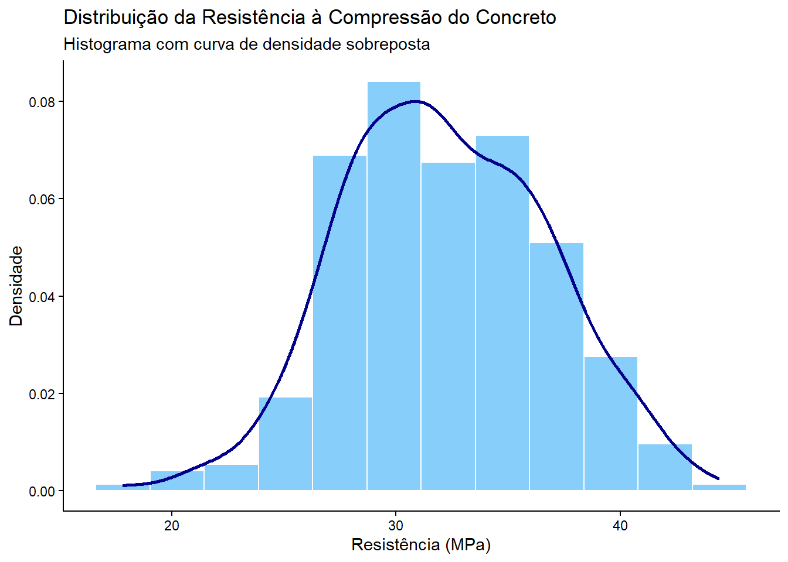
A curva de densidade reforça a leitura feita no histograma do Base R: a distribuição é aproximadamente simétrica e unimodal, sem caudas pesadas evidentes, com concentração de massa entre 25 e 40 MPa. A suavização da densidade torna mais nítido que não há bimodalidade — ou seja, não parece haver dois “grupos” distintos de resistência (por exemplo, traços de concreto diferentes) misturados na amostra.
5.9 Adoção de Práticas Sustentáveis por Tipo de Obra (ggplot2)
Código
ggplot(dados, aes(x = tipo_obra, fill = sustentavel)) +
geom_bar(position = "dodge") +
labs(
title = "Adoção de Práticas Sustentáveis por Tipo de Obra",
x = "Tipo de Obra",
y = "Número de Obras",
fill = "Sustentável"
) +
theme_classic()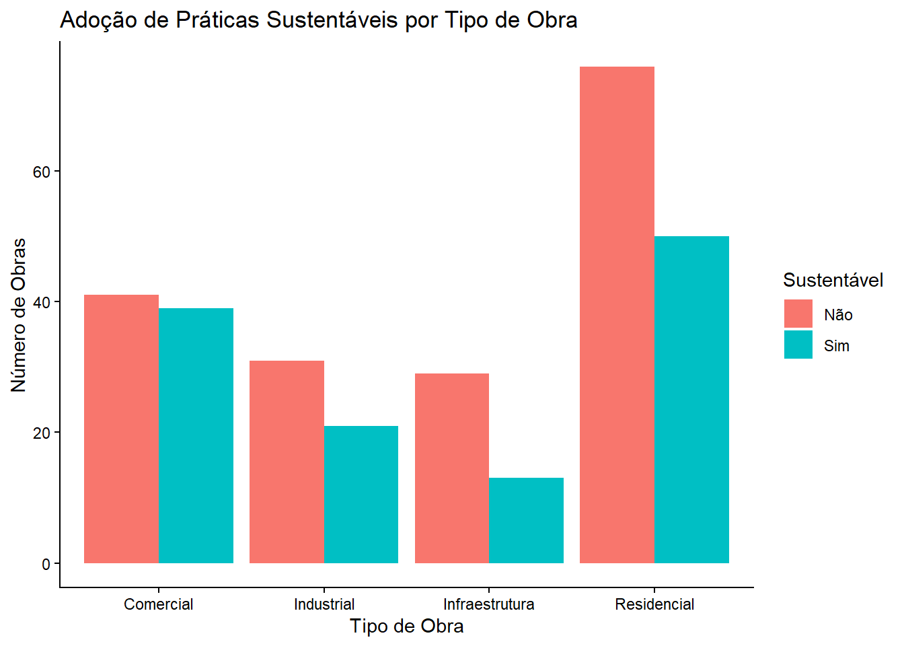
A adoção de práticas sustentáveis é proporcionalmente mais frequente em obras Comerciais (quase metade das obras desse tipo são sustentáveis) e menos frequente em obras de Infraestrutura, onde a maioria das obras não adota tais práticas. Isso pode refletir tanto restrições técnicas e orçamentárias de grandes obras públicas de infraestrutura quanto uma tendência do setor privado/comercial de agregar valor de marca por meio de certificações e práticas sustentáveis.
5.10 Relação Área-Custo por Região (ggplot2)
Código
# Adição de escala formatada em R$ no eixo Y
ggplot(dados, aes(x = area_construida, y = custo_total)) +
geom_point(alpha = 0.6, color = "steelblue") +
geom_smooth(method = "lm", se = FALSE, color = "darkred") +
facet_wrap(~ regiao) +
scale_y_continuous(labels = scales::label_number(prefix = "R$ ", big.mark = ".", decimal.mark = ",")) +
labs(
title = "Relação entre Área Construída e Custo Total por Região",
x = "Área Construída (m²)",
y = "Custo Total (R$)"
) +
theme_classic()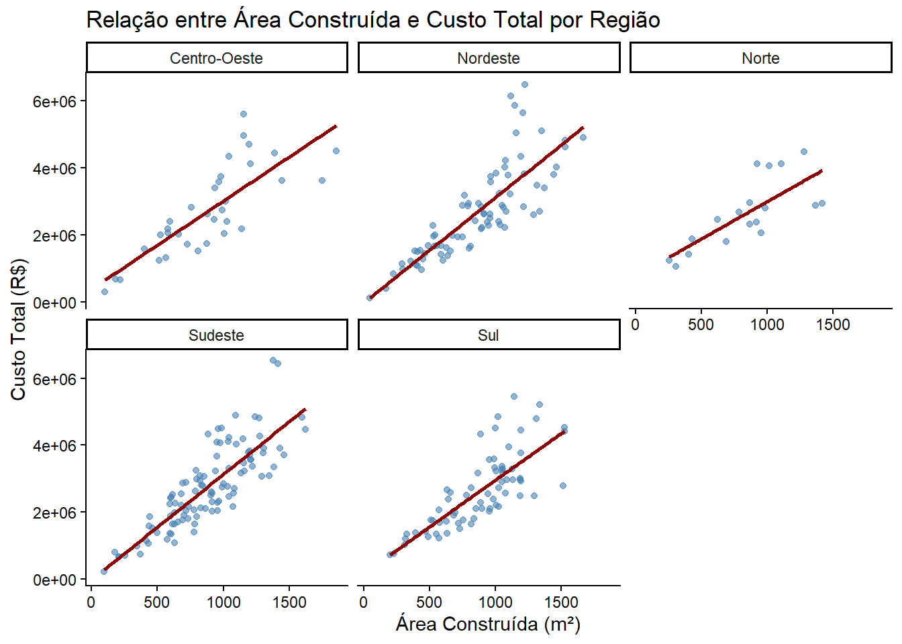
A relação positiva entre área e custo se repete de forma consistente em todas as cinco regiões — nenhuma delas mostra uma reta de tendência com inclinação nula ou negativa, o que reforça a robustez do padrão. Ainda assim, é esperado que a inclinação da reta (ou seja, o custo por m² adicional) varie ligeiramente entre regiões, refletindo diferenças regionais de custo de mão de obra e materiais. A região Norte, por ter a menor quantidade de obras (18), tende a apresentar maior incerteza na reta ajustada, simplesmente por ter menos pontos para sustentar a estimativa.
5.11 Consumo de Cimento, Resistência e Prazo de Execução (ggplot2)
Código
ggplot(dados, aes(x = consumo_cimento, y = resistencia_mpa, color = prazo_meses)) +
geom_point(alpha = 0.7, size = 2) +
geom_smooth(method = "lm", se = FALSE, color = "black", linewidth = 0.8) +
facet_wrap(~ tipo_obra) +
scale_color_viridis_c(option = "plasma") +
labs(
title = "Consumo de Cimento x Resistência do Concreto",
subtitle = "Facetado por tipo de obra, colorido pelo prazo de execução",
x = "Consumo de Cimento (kg/m³)",
y = "Resistência à Compressão (MPa)",
color = "Prazo (meses)"
) +
theme_minimal()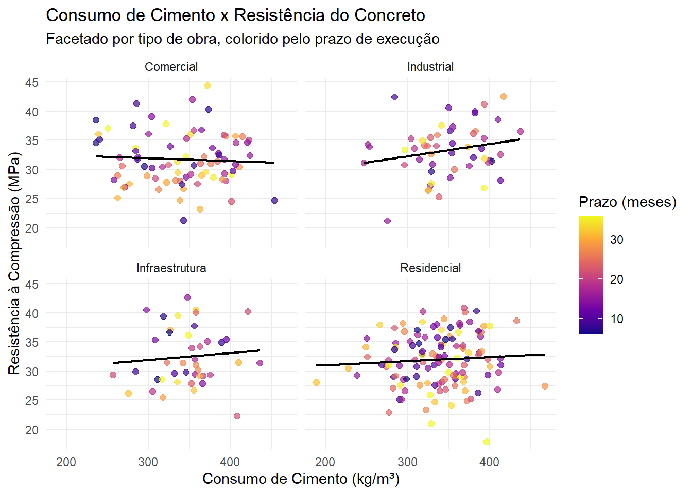
Escolheu-se consumo_cimento e resistencia_mpa porque, tecnicamente, seria esperada alguma correlação positiva entre o consumo de cimento e a resistência final do concreto — traços mais ricos tendem a gerar concretos mais resistentes. A geometria de pontos com reta de tendência (geom_point() + geom_smooth()) permite avaliar essa relação; a faceta por tipo_obra verifica se o padrão se mantém em diferentes contextos construtivos; e o mapeamento de cor pelo prazo_meses (com escala contínua scale_color_viridis_c()) adiciona uma terceira dimensão à leitura, investigando se obras mais lentas concentram-se em alguma faixa específica de consumo/resistência. Diferentemente dos gráficos anteriores, centrados em custo, este gráfico revela — ou não — uma relação técnica de engenharia de materiais que os demais não capturavam.
5.12 Exploração Interativa da Relação Área-Custo (plotly)
Código
# Formatação da escala em R$ e tooltip interativo personalizado
g_dispersao <- ggplot(dados, aes(
x = area_construida,
y = custo_total,
color = tipo_obra,
text = paste0("<b>Obra:</b> ", id_obra,
"<br><b>Área:</b> ", area_construida, " m²",
"<br><b>Custo:</b> R$ ", format(custo_total, big.mark = ".", decimal.mark = ","))
)) +
geom_point(alpha = 0.7, size = 2) +
scale_y_continuous(labels = scales::label_number(prefix = "R$ ", big.mark = ".", decimal.mark = ",")) +
labs(
title = "Área Construída x Custo Total (interativo)",
x = "Área Construída (m²)",
y = "Custo Total (R$)",
color = "Tipo de Obra"
) +
theme_classic()
ggplotly(g_dispersao, tooltip = "text")Ao converter o gráfico ggplot2 em interativo com ggplotly(), incluindo o id_obra no tooltip, é possível identificar rapidamente, ao passar o mouse sobre os pontos, quais obras específicas apresentam custo muito acima ou abaixo do esperado para o seu tamanho — algo que os gráficos estáticos anteriores só permitiam estimar visualmente. Essas obras atípicas concentram-se predominantemente no tipo Infraestrutura (custo acima do esperado) e Industrial (custo abaixo do esperado), confirmando a leitura já feita na segmentação por tipo de obra.
5.13 Custo Médio por Região em Gráfico Interativo Direto (plotly)
Código
# Formatação de moeda no eixo Y e tooltip interativo (hovertemplate)
custo_medio_regiao <- dados |>
group_by(regiao) |>
summarise(custo_medio = mean(custo_total), .groups = "drop") |>
arrange(desc(custo_medio))
plot_ly(
data = custo_medio_regiao,
x = ~regiao,
y = ~custo_medio,
type = "scatter",
mode = "lines+markers",
hovertemplate = "<b>Região:</b> %{x}<br><b>Custo Médio:</b> R$ %{y:,.2f}<extra></extra>"
) |>
layout(
title = "Custo Médio das Obras por Região",
xaxis = list(title = "Região"),
yaxis = list(title = "Custo Médio (R$)", tickprefix = "R$ ", tickformat = ",.0f")
)O uso direto de plot_ly(), sem passar por um objeto ggplot2, é mais vantajoso quando já se dispõe de um resumo agregado — como custo_medio_regiao, produzido aqui com dplyr — e se deseja controle fino sobre o tipo de traço, o modo de exibição (lines+markers) e o layout, sem o custo computacional adicional de primeiro renderizar um gráfico estático para depois convertê-lo. Em geral, ggplotly() é preferível quando já existe um pipeline ggplot2 consolidado, e plot_ly() é mais direto para protótipos rápidos e séries agregadas simples, como o custo médio por região calculado acima.
5.14 Custo Médio por Tipo de Obra (highcharter)
Código
# Formatação de moeda no eixo Y e tooltip interativo em Reais (R$)
custo_medio_tipo <- dados |>
group_by(tipo_obra) |>
summarise(custo_medio = mean(custo_total), .groups = "drop") |>
arrange(desc(custo_medio))
hchart(custo_medio_tipo, "column", hcaes(x = tipo_obra, y = custo_medio)) |>
hc_title(text = "Custo Médio por Tipo de Obra") |>
hc_xAxis(title = list(text = "Tipo de Obra")) |>
hc_yAxis(
title = list(text = "Custo Médio (R$)"),
labels = list(format = "R$ {value:,.0f}")
) |>
hc_tooltip(pointFormat = "<b>Custo Médio:</b> R$ {point.y:,.2f}")O ranking de custo médio por tipo de obra (Infraestrutura > Comercial > Residencial > Industrial) coincide integralmente com o observado nos boxplots anteriores, que já indicavam Infraestrutura com a maior mediana e Industrial com a menor. A convergência entre a medida de tendência central (média, aqui) e a medida de posição robusta (mediana, nos boxplots) reforça a consistência do achado: não se trata de um artefato causado por outliers isolados, mas de uma diferença estrutural real de custo entre os tipos de obra.
5.15 Prazo Médio por Região (highcharter)
Código
prazo_medio_regiao <- dados |>
group_by(regiao) |>
summarise(prazo_medio = mean(prazo_meses), .groups = "drop") |>
arrange(desc(prazo_medio))
hchart(prazo_medio_regiao, "line", hcaes(x = regiao, y = prazo_medio))As regiões Norte, Nordeste e Sudeste apresentam os maiores prazos médios de execução, enquanto Centro-Oeste e Sul apresentam os menores. Essa diferença — embora moderada — pode estar relacionada a fatores logísticos (maior dificuldade de transporte de materiais e mão de obra especializada na região Norte), climáticos (regime de chuvas mais intenso em parte do Nordeste e Sudeste, impactando o cronograma de obras) e à complexidade média das obras executadas em cada região.
5.16 Participação dos Tipos de Obra no Portfólio (highcharter)
Código
participacao_tipo <- dados |>
count(tipo_obra) |>
arrange(desc(n))
hchart(participacao_tipo, "pie", hcaes(name = tipo_obra, y = n)) |>
hc_title(text = "Participação por Tipo de Obra")O gráfico de pizza comunica adequadamente a participação de cada tipo de obra no total (Residencial ≈ 42%, Comercial ≈ 27%, Industrial ≈ 17%, Infraestrutura ≈ 14%), mas um gráfico de barras seria, em geral, uma escolha tecnicamente melhor: em pizzas, a comparação de fatias com ângulos próximos (como Industrial e Infraestrutura) é perceptualmente mais difícil do que a comparação de barras alinhadas em um mesmo eixo. A pizza se justifica aqui principalmente pelo apelo visual imediato em apresentações executivas, mas o barplot de distribuição regional apresentado anteriormente ilustra bem a vantagem comparativa das barras.
5.17 Personalização de Gráficos para Apresentações Executivas (highcharter)
Código
hchart(custo_medio_tipo, "column", hcaes(x = tipo_obra, y = custo_medio)) |>
hc_title(text = "Custo Médio por Tipo de Obra") |>
hc_subtitle(text = "Indicadores consolidados do controle tecnológico das obras") |>
hc_tooltip(pointFormat = "<b>Custo Médio:</b> R$ {point.y:,.2f}") |>
hc_colors(c("#2C3E50")) |> # Cor executiva (Azul Grafite)
hc_add_theme(hc_theme_flat()) |> # Tema claro moderno
hc_exporting(enabled = TRUE) |> # Permite descarregar o gráfico em imagem/PDF
hc_chart(zoomType = "x")Entre os recursos de personalização aplicados, o tema escuro (hc_theme_darkunica()) é o mais útil para apresentações executivas: confere um visual profissional e de alto contraste, adequado a projeções e dashboards corporativos, além de destacar as cores das séries de dados. O tooltip personalizado, por sua vez, é essencial para garantir que a informação numérica seja lida corretamente (aqui, formatada em reais), evitando ambiguidade na interpretação dos valores durante a apresentação.
5.18 Mapa Base das Obras no Território Nacional (leaflet)
Código
leaflet() |>
addProviderTiles(providers$Esri.WorldTopoMap) |>
setView(lng = -47.8828, lat = -15.7939, zoom = 4)Optou-se pelo provedor providers$Esri.WorldTopoMap — um mapa base claro, minimalista e de baixo contraste — em vez do padrão OpenStreetMap (addTiles()). Essa escolha é adequada para relatórios técnicos e apresentações, pois evita que o mapa base compita visualmente com os marcadores e popups sobrepostos, mantendo o foco nos dados de engenharia representados. (Optou-se por este provedor Esri, e não pelo CartoDB.Positron — visualmente equivalente —, pois a Carto passou a exigir chave de API própria para o uso de seus mapas base, inclusive em documentos renderizados estaticamente, o que inviabiliza sua utilização sem cadastro.) O mapa foi centralizado em Brasília, por ser um ponto geográfico central do território nacional, com zoom reduzido para enquadrar as cinco regiões brasileiras.
5.19 Distribuição de Obras por Região no Mapa (leaflet)
Código
# Coordenadas aproximadas de uma capital representativa de cada região
# e numero de obras por regiao (obtido com table())
obras_regiao <- as.data.frame(table(dados$regiao))
names(obras_regiao) <- c("regiao", "n_obras")
capitais_regiao <- data.frame(
regiao = c("Norte", "Nordeste", "Centro-Oeste", "Sudeste", "Sul"),
cidade = c("Manaus", "Recife", "Brasília", "São Paulo", "Curitiba"),
lat = c(-3.1190, -8.0476, -15.7939, -23.5505, -25.4284),
lon = c(-60.0217, -34.8770, -47.8828, -46.6333, -49.2733)
)
mapa_regioes <- merge(capitais_regiao, obras_regiao, by = "regiao")
# Provedor topográfico e popups estilizados com HTML/CSS
leaflet(mapa_regioes) |>
addProviderTiles(providers$Esri.WorldTopoMap) |>
setView(lng = -52, lat = -14, zoom = 4) |>
addMarkers(
lng = ~lon, lat = ~lat,
popup = ~paste0(
"<div style='font-family: Arial, sans-serif; font-size: 13px; line-height: 1.5;'>",
"<h4 style='margin: 0 0 5px 0; color: #2C3E50; border-bottom: 2px solid #2E86AB;'>Região ", regiao, "</h4>",
"<b>Cidade Ref.:</b> ", cidade, "<br>",
"<b>Volume de Obras:</b> <span style='color: #C73E1D; font-weight: bold;'>", n_obras, " obras</span>",
"</div>"
)
)A distribuição geográfica das obras no mapa é coerente com o barplot regional apresentado anteriormente: Sudeste concentra o maior número de marcadores/obras, seguida por Nordeste e Sul, enquanto Norte apresenta o menor volume. A representação em mapa acrescenta, porém, a dimensão espacial — evidenciando visualmente a concentração de obras no eixo Sul-Sudeste-Nordeste do país e a dispersão territorial mais rarefeita na região Norte, algo que o gráfico de barras, por si só, não comunica.
5.20 Destaque da Região com Maior Concentração de Obras (leaflet)
Código
regiao_destaque <- mapa_regioes[which.max(mapa_regioes$n_obras), ]
leaflet(mapa_regioes) |>
addProviderTiles(providers$Esri.WorldTopoMap) |>
setView(lng = -52, lat = -14, zoom = 4) |>
addMarkers(
lng = ~lon, lat = ~lat,
popup = ~paste0("<b>Região ", regiao, "</b><br>Número de obras: ", n_obras)
) |>
addCircles(
lng = regiao_destaque$lon, lat = regiao_destaque$lat,
radius = 250000,
color = "red",
fillColor = "red",
fillOpacity = 0.25
)O círculo destaca a região Sudeste, com o maior número de obras (101 de 300, ou cerca de 34% do total). Caso a base contivesse as coordenadas exatas de cada obra, e não apenas uma referência regional, seria possível mapear geograficamente outras informações relevantes — como custo por m² (para identificar bolsões regionais de obras mais caras), índice de falhas (para localizar áreas com maior incidência de não conformidades) ou adoção de práticas sustentáveis —, permitindo uma gestão territorial mais refinada do portfólio de obras da empresa.
5.21 Custo das Obras de Infraestrutura frente aos Demais Tipos
Código
# Tabela com custo formatado em R$ e escala monetária no boxplot
resumo_custo_tipo <- dados |>
group_by(tipo_obra) |>
summarise(
custo_medio = mean(custo_total),
custo_mediano = median(custo_total),
n = n(),
.groups = "drop"
) |>
arrange(desc(custo_medio)) |>
mutate(
`Custo Médio (R$)` = scales::dollar(custo_medio, prefix = "R$ ", big.mark = ".", decimal.mark = ","),
`Custo Mediano (R$)` = scales::dollar(custo_mediano, prefix = "R$ ", big.mark = ".", decimal.mark = ",")
)
# Exibe a tabela organizada com colunas formatadas
resumo_custo_tipo |>
select(tipo_obra, `Custo Médio (R$)`, `Custo Mediano (R$)`, n)# A tibble: 4 × 4
tipo_obra `Custo Médio (R$)` `Custo Mediano (R$)` n
<chr> <chr> <chr> <int>
1 Infraestrutura R$ 3.727.873 R$ 3.873.562 42
2 Comercial R$ 2.954.521 R$ 2.881.457 80
3 Residencial R$ 2.446.567 R$ 2.484.773 126
4 Industrial R$ 2.031.071 R$ 2.142.211 52Código
# Boxplot ordenado com escala monetária formatada
ggplot(dados, aes(x = reorder(tipo_obra, custo_total, FUN = mean), y = custo_total)) +
geom_boxplot(fill = "steelblue", alpha = 0.6) +
scale_y_continuous(labels = scales::label_number(prefix = "R$ ", big.mark = ".", decimal.mark = ",")) +
labs(
title = "Custo Total por Tipo de Obra (ordenado pela média)",
x = "Tipo de Obra",
y = "Custo Total (R$)"
) +
theme_classic() +
coord_flip()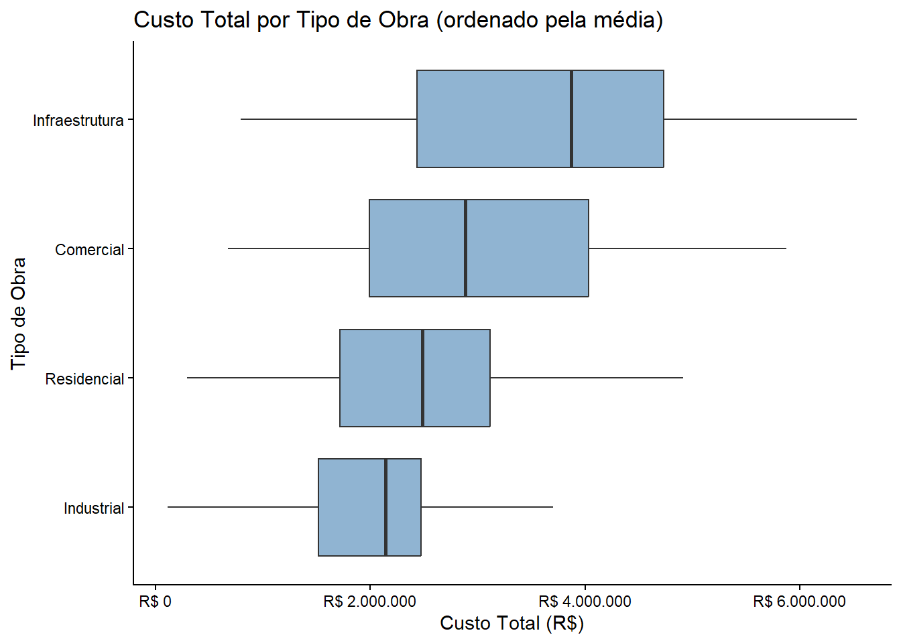
Um dos engenheiros responsáveis pela empresa afirmou que “as obras de infraestrutura apresentam custo médio superior às demais”. Os dados dão suporte descritivo a essa afirmação: Infraestrutura apresenta o maior custo médio (≈ R$ 3,73 milhões) entre os quatro tipos, superando Comercial (≈ R$ 2,95 milhões), Residencial (≈ R$ 2,45 milhões) e Industrial (≈ R$ 2,03 milhões). A mesma ordem se mantém quando se observa a mediana, o que reforça a robustez da comparação frente a possíveis valores extremos. Ressalta-se que essa é uma leitura descritiva, sem teste de hipótese formal — não se pode afirmar, apenas com estes gráficos, que a diferença é estatisticamente significativa.
5.22 Sustentabilidade e Custo Total
Código
# Escala em Milhões de Reais e eixos na horizontal (las = 1)
boxplot(
(custo_total / 1e6) ~ sustentavel,
data = dados,
col = c("lightsalmon", "lightgreen"),
main = "Custo Total: Obras Sustentáveis vs. Não Sustentáveis",
xlab = "Prática Sustentável",
ylab = "Custo Total (em milhões de R$)",
las = 1
)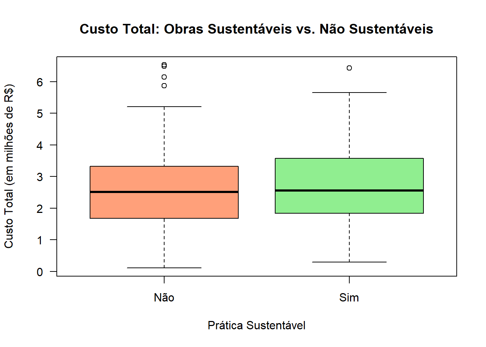
Código
# Adição de escala formatada em R$ no eixo Y
dados |>
group_by(sustentavel) |>
summarise(custo_medio = mean(custo_total), .groups = "drop") |>
ggplot(aes(x = sustentavel, y = custo_medio, fill = sustentavel)) +
geom_col() +
scale_y_continuous(labels = scales::label_number(prefix = "R$ ", big.mark = ".", decimal.mark = ",")) +
labs(
title = "Custo Médio: Obras Sustentáveis vs. Não Sustentáveis",
x = "Prática Sustentável",
y = "Custo Médio (R$)"
) +
theme_classic() +
theme(legend.position = "none")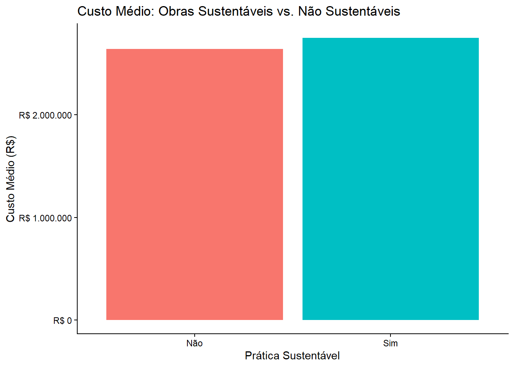
Investigando se obras sustentáveis apresentam custo sistematicamente diferente das não sustentáveis, os dois gráficos acima indicam que obras sustentáveis apresentam custo total ligeiramente superior ao das não sustentáveis (médias de aproximadamente R$ 2,75 milhões contra R$ 2,65 milhões), mas a diferença é pequena diante da dispersão de cada grupo, visível na sobreposição das caixas no boxplot. Não há, portanto, evidência visual de uma diferença sistemática forte entre os grupos — a adoção de práticas sustentáveis parece ter impacto discreto sobre o custo total nesta amostra, o que é um resultado favorável do ponto de vista de gestão (sustentabilidade sem grande penalização de custo).
5.23 Falhas Técnicas e Satisfação do Cliente
Código
ggplot(dados, aes(x = indice_falhas, y = satisfacao)) +
geom_jitter(width = 0.15, height = 0.15, alpha = 0.6, color = "steelblue") +
geom_smooth(method = "lm", se = FALSE, color = "darkred") +
labs(
title = "Relação entre Índice de Falhas e Satisfação do Cliente",
x = "Índice de Falhas",
y = "Satisfação do Cliente (0 a 10)"
) +
theme_classic()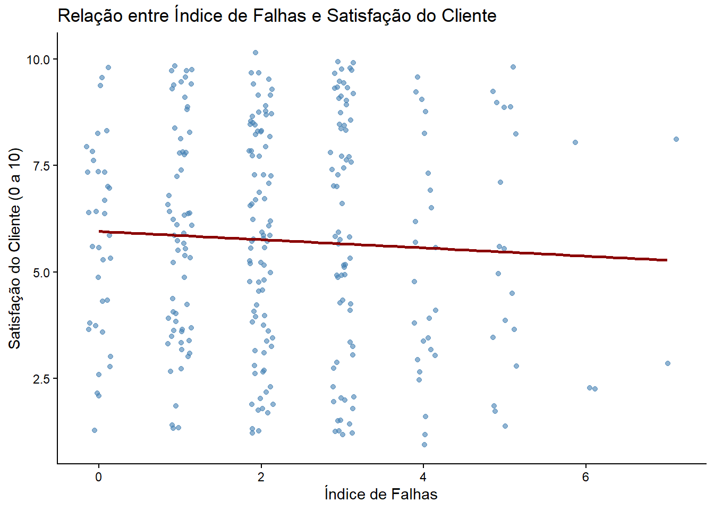
Código
cor(dados$indice_falhas, dados$satisfacao)[1] -0.05340599Optou-se por geom_jitter() em vez de geom_point() para relacionar indice_falhas e satisfacao, pois ambas as variáveis são discretas e, sem esse leve deslocamento aleatório, muitos pontos ficariam sobrepostos, mascarando a densidade real de observações. Visualmente, a nuvem de pontos é bastante dispersa, sem uma tendência clara — e o coeficiente de correlação de Pearson calculado (-0.053) confirma essa leitura: não há evidência de associação relevante entre o número de falhas registradas e a satisfação do cliente nesta amostra. Isso é, à primeira vista, contraintuitivo — seria esperado que mais falhas reduzissem a satisfação —, sugerindo que outros fatores (prazo, comunicação, qualidade percebida do acabamento) podem pesar mais na percepção do cliente do que o número bruto de falhas técnicas registradas.
5.24 Painel Gráfico de Apoio à Gestão
Para consolidar um resumo gráfico voltado ao engenheiro responsável pelo controle tecnológico, foram organizados três gráficos que, em conjunto, comunicam o perfil das obras por tipo e região, a distribuição de custo em função do prazo e a relação técnica entre consumo de cimento e resistência do concreto.
Código
# Grafico 1: perfil das obras por tipo e regiao
dados |>
count(regiao, tipo_obra) |>
ggplot(aes(x = regiao, y = n, fill = tipo_obra)) +
geom_col(position = "stack") +
labs(
title = "Perfil das Obras por Tipo e Região",
x = "Região", y = "Número de Obras", fill = "Tipo de Obra"
) +
theme_classic()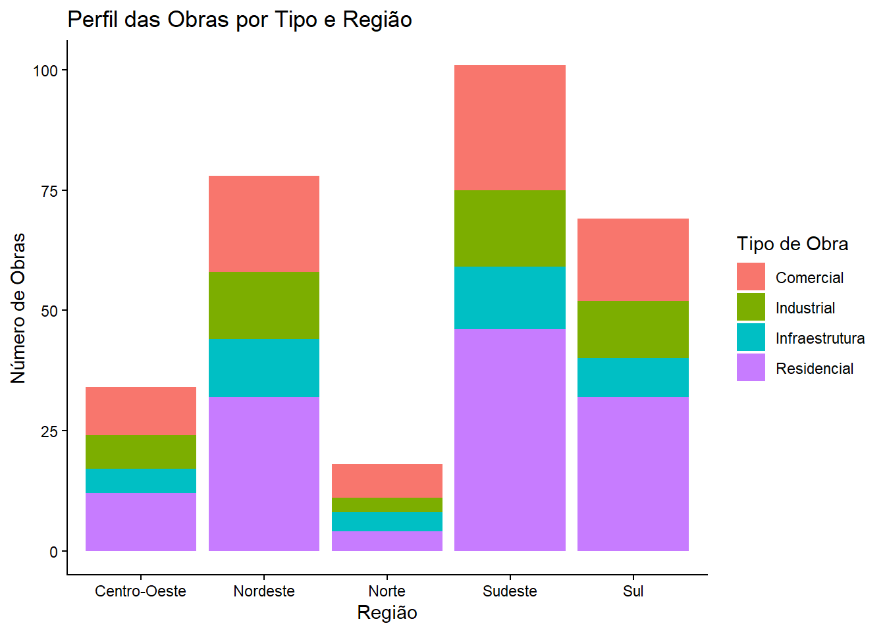
Código
# Adição de escala formatada em R$ no eixo Y
ggplot(dados, aes(x = prazo_meses, y = custo_total)) +
geom_point(alpha = 0.5, color = "steelblue") +
geom_smooth(method = "lm", se = FALSE, color = "darkred") +
scale_y_continuous(labels = scales::label_number(prefix = "R$ ", big.mark = ".", decimal.mark = ",")) +
labs(
title = "Distribuição de Custo Total em Função do Prazo de Execução",
x = "Prazo (meses)", y = "Custo Total (R$)"
) +
theme_classic()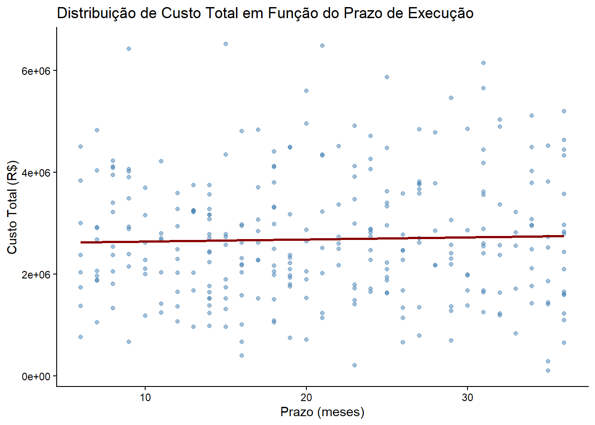
Código
# Grafico 3: relacao entre consumo de cimento e resistencia
hchart(dados, "scatter", hcaes(x = consumo_cimento, y = resistencia_mpa, group = tipo_obra)) |>
hc_title(text = "Consumo de Cimento x Resistência do Concreto") |>
hc_xAxis(title = list(text = "Consumo de Cimento (kg/m³)")) |>
hc_yAxis(title = list(text = "Resistência (MPa)"))Os três gráficos foram organizados em uma sequência lógica de leitura executiva: primeiro, o perfil das obras (onde e de que tipo são as obras da empresa), contextualizando o portfólio; em seguida, a relação entre custo e prazo, que é a informação de maior interesse gerencial imediato (obras mais longas tendem a custar mais); por fim, um indicador técnico-qualitativo — a relação entre consumo de cimento e resistência do concreto —, de interesse mais específico da equipe de controle tecnológico. Essa ordem parte do panorama geral (gestão de portfólio) para o detalhe técnico (controle de qualidade), acompanhando o nível de detalhe que cada público (gerencial → técnico) normalmente demanda.
6 🏆 Painel Integrado — Comunicação Visual dos Dados para a Engenharia
O script a seguir consolida, de forma organizada e comentada, a inspeção inicial da base e ao menos um gráfico em cada um dos cinco sistemas trabalhados, incluindo um gráfico autoral com múltiplas camadas e facetas e um mapa interativo com marcadores e popups — reunindo, em um único fluxo, as ferramentas discutidas ao longo do relatório.
Código
# ==========================================================================
# ETAPA 1: Inspecao inicial da base
# ==========================================================================
dim(dados)[1] 300 12Código
str(dados)'data.frame': 300 obs. of 12 variables:
$ id_obra : int 1 2 3 4 5 6 7 8 9 10 ...
$ tipo_obra : chr "Industrial" "Comercial" "Residencial" "Residencial" ...
$ regiao : chr "Nordeste" "Nordeste" "Sul" "Sudeste" ...
$ area_construida: num 802 792 575 1157 582 ...
$ custo_total : num 1608826 2870992 1683606 3469884 2176259 ...
$ prazo_meses : int 36 20 13 23 28 27 20 15 35 15 ...
$ resistencia_mpa: num 26.8 28.1 33.1 31.1 28.3 ...
$ consumo_cimento: num 393 394 387 369 389 ...
$ indice_falhas : int 1 2 4 1 2 4 1 2 0 1 ...
$ satisfacao : num 6.2 7.8 3.8 3.8 6.7 1 9.7 8.8 7.6 5.1 ...
$ sustentavel : chr "Sim" "Sim" "Não" "Sim" ...
$ custo_m2 : num 2005 3627 2926 3000 3742 ...Código
summary(dados$custo_total) Min. 1st Qu. Median Mean 3rd Qu. Max.
112443 1754793 2548002 2689385 3475290 6526477 Código
# ==========================================================================
# ETAPA 2: Grafico em Base R - escala em Milhões de Reais e eixos formatados
# ==========================================================================
plot(
dados$area_construida, dados$custo_total / 1e6,
main = "Base R: Área Construída x Custo Total",
xlab = "Área Construída (m²)", ylab = "Custo Total (em milhões de R$)",
pch = 21, bg = "#4682B4", col = "#1C39BB", cex = 0.8, las = 1
)
grid(col = "gray85", lty = "dotted")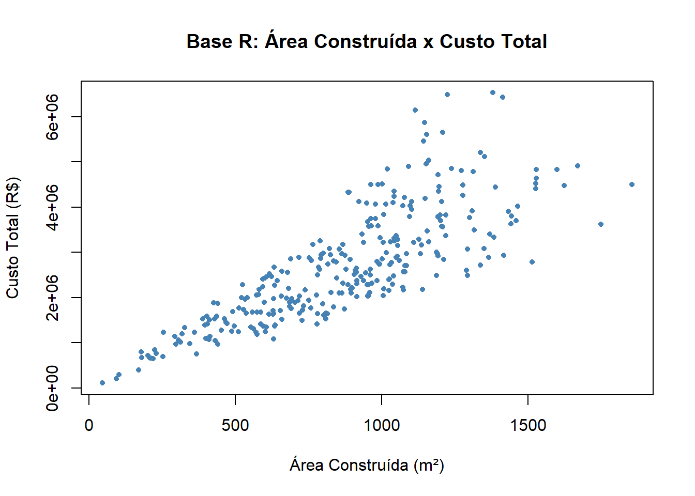
Código
# ==========================================================================
# ETAPA 3: Grafico autoral em ggplot2 - multiplas camadas + facetas com escala em R$
# ==========================================================================
grafico_autoral <- dados |>
ggplot(aes(x = area_construida, y = custo_total, color = sustentavel)) +
geom_point(alpha = 0.6, size = 2) +
geom_smooth(method = "lm", se = FALSE, linewidth = 0.8) +
facet_wrap(~ tipo_obra, scales = "free") +
scale_color_manual(values = c("Sim" = "seagreen", "Não" = "firebrick")) +
scale_y_continuous(labels = scales::label_number(prefix = "R$ ", big.mark = ".", decimal.mark = ",")) +
labs(
title = "Painel Autoral: Custo x Área por Tipo de Obra e Sustentabilidade",
x = "Área Construída (m²)", y = "Custo Total (R$)", color = "Sustentável"
) +
theme_minimal()
grafico_autoral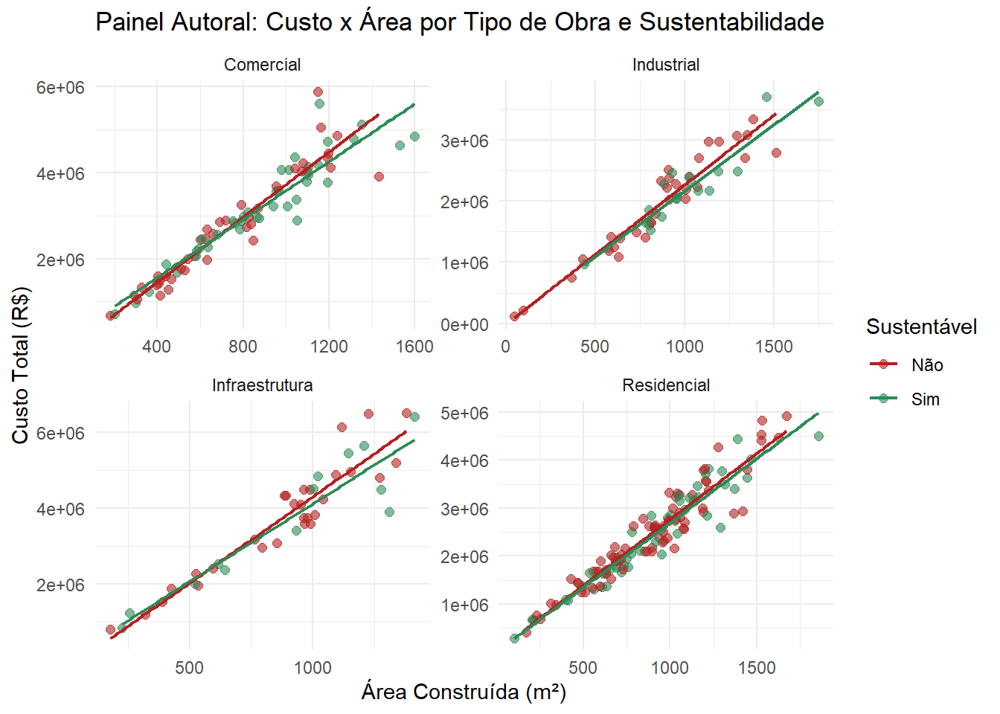
Código
# ==========================================================================
# ETAPA 4: Grafico interativo com plotly (conversao do grafico autoral)
# ==========================================================================
#| fig-height: 8
#| fig-width: 10
ggplotly(grafico_autoral) |>
layout(
margin = list(t = 80, b = 60, l = 60, r = 20),
title = list(y = 0.98) # Posiciona o título acima do gráfico sem encostar nos botões
)Código
# ==========================================================================
# ETAPA 5: Grafico interativo com highcharter e escala formatada em R$
# ==========================================================================
resumo_regiao <- dados |>
group_by(regiao) |>
summarise(custo_medio = mean(custo_total), .groups = "drop") |>
arrange(desc(custo_medio))
hchart(resumo_regiao, "column", hcaes(x = regiao, y = custo_medio)) |>
hc_title(text = "Custo Médio por Região") |>
hc_yAxis(labels = list(format = "R$ {value:,.0f}")) |>
hc_tooltip(pointFormat = "<b>Custo médio:</b> R$ {point.y:,.2f}")Código
# ==========================================================================
# ETAPA 6: Mapa interativo com leaflet - marcadores e padronização topográfica
# ==========================================================================
leaflet(mapa_regioes) |>
addProviderTiles(providers$Esri.WorldTopoMap) |>
setView(lng = -52, lat = -14, zoom = 4) |>
addMarkers(
lng = ~lon, lat = ~lat,
popup = ~paste0("<b>Região ", regiao, "</b><br>Número de obras: ", n_obras)
)O Base R foi usado para uma checagem visual rápida e sem dependências, típica da fase exploratória inicial de qualquer análise. No gráfico autoral, a geometria de pontos com reta de tendência (geom_point() + geom_smooth()) foi escolhida por permitir avaliar simultaneamente a força e a direção da relação custo-área; a faceta por tipo_obra isola o efeito de cada categoria construtiva, evitando que a heterogeneidade entre tipos mascare padrões internos a cada grupo; a cor por sustentavel investiga se a adoção de práticas sustentáveis se relaciona com padrões distintos de custo dentro de cada tipo de obra; scales = "free" foi usado porque a amplitude de área e custo difere consideravelmente entre tipos de obra (Infraestrutura tem obras muito maiores que Industrial, por exemplo), e escalas fixas prejudicariam a leitura dos grupos menores.
O plotly (ggplotly()) foi aplicado sobre o gráfico autoral para permitir a exploração pontual de obras específicas sem multiplicar o número de gráficos estáticos. O highcharter foi escolhido para o resumo por região por oferecer tooltips formatados nativamente em moeda, recurso valioso para apresentações executivas. O leaflet encerra o painel trazendo a dimensão geográfica que nenhum dos demais gráficos comunica sozinho, essencial para uma empresa que atua em múltiplas regiões do país.
6.1 Base R e ggplot2: uma Diferença Conceitual
A principal diferença entre os dois paradigmas é conceitual. No Base R, cada gráfico é construído por uma função específica e monolítica (plot(), hist(), boxplot()), com personalização feita por meio de argumentos isolados. No ggplot2, o gráfico é construído por camadas, combinando dados, mapeamentos estéticos, geometrias, facetas, escalas e temas de forma modular e reutilizável — o que facilita tanto pequenas variações (trocar geom_point() por geom_line() mantendo todo o resto) quanto gráficos complexos (múltiplas camadas, facetas, temas customizados), como os explorados ao longo deste relatório.
6.2 A Escolha do Sistema Gráfico como Decisão Técnica
Na Engenharia Civil, um gráfico não é apenas uma ilustração — é um instrumento de comunicação de risco e de subsídio a decisões que envolvem investimentos, prazos e segurança estrutural. Escolher mal a geometria (por exemplo, usar um gráfico de pizza onde um de barras seria mais preciso) ou o sistema gráfico (usar Base R estático quando o público precisa explorar interativamente os dados por obra) pode levar a interpretações equivocadas por parte de gestores e clientes, com impacto direto sobre decisões técnicas e financeiras. Essa é a razão pela qual cada gráfico apresentado neste relatório foi acompanhado de uma justificativa explícita da geometria, da paleta de cores e do sistema escolhido.
6.3 O Gráfico Mais Informativo do Relatório
Dentre todos os produzidos, o gráfico de dispersão interativo construído com plotly (área x custo, colorido por tipo de obra e com id_obra no tooltip) foi considerado o mais informativo. Essa avaliação se justifica porque ele combina três informações simultâneas — a relação geral entre área e custo, a segmentação por tipo de obra e a identificação pontual de obras específicas — em um único gráfico interativo, algo que nenhum gráfico estático das demais seções conseguiu reunir. O gráfico revela que a relação entre tamanho e custo da obra é forte e positiva em toda a amostra, mas que o tipo de obra é o principal fator que desloca essa relação (Infraestrutura sistematicamente mais cara por m² que os demais tipos), uma informação de valor direto para o planejamento orçamentário da empresa.
7 🧠 Considerações Finais
Este relatório cumpriu o objetivo de explorar, visualizar e comunicar dados de uma situação prática de Engenharia Civil, articulando os cinco principais sistemas gráficos da linguagem R (Base R, ggplot2, plotly, highcharter e leaflet) sobre uma base real de 300 obras.
Quanto à qualidade dos dados, a base analisada não apresentou valores ausentes e, de forma geral, os valores das variáveis são compatíveis com o contexto da Engenharia Civil, com exceção de um único registro de resistência do concreto (17,82 MPa) abaixo do fck mínimo usual de projeto — um ponto que, em um cenário real, mereceria verificação junto à fonte dos dados.
Entre os principais achados técnicos, a análise gráfica evidenciou uma relação positiva e consistente entre área construída e custo total em todas as regiões e tipos de obra, sendo o tipo de obra — e não a região — o principal fator de deslocamento dessa relação. Obras de Infraestrutura apresentaram maior custo médio/mediano e maior dispersão, e obras Industriais, o menor custo médio. Observou-se também concentração geográfica de obras nas regiões Sudeste, Nordeste e Sul, coerente com o padrão nacional do setor; ausência de associação relevante entre índice de falhas e satisfação do cliente, sugerindo que outros fatores não capturados na base influenciam mais fortemente a percepção do cliente; e impacto discreto da adoção de práticas sustentáveis sobre o custo total das obras.
Do ponto de vista metodológico, ficou evidente que a escolha do sistema gráfico não é uma questão puramente estética, mas uma decisão técnica que deve considerar o público-alvo — execução rápida com Base R, comunicação de gestão com ggplot2/highcharter, exploração pontual com plotly, contexto geográfico com leaflet — e a natureza da pergunta a ser respondida. A combinação dos cinco sistemas, como demonstrado no painel integrado, permite construir uma comunicação visual completa, capaz de transformar dados brutos de controle tecnológico em informação confiável para a tomada de decisão na Engenharia Civil.
8 📖 Referências
BATISTA, B. D. DE O. Estatı́stica & Probabilidade aplicada às Engenharias e Ciências. Ouro Branco, MG: [s.n.].
BATISTA, B. D. O.; OLIVEIRA, D. A. B. J. R básico. 1. ed. Ouro Branco, MG: [s.n.], 2022. p. 321
CHENG, J.; KARAMBELKAR, B.; XIE, Y. leaflet: Create Interactive Web Maps with the JavaScript ’Leaflet’ Library. [s.l: s.n.].
KUNST, J. highcharter: A Wrapper for the ’Highcharts’ Library. [s.l: s.n.].
SIEVERT, C. Interactive Web-Based Data Visualization with R, plotly, and shiny. [s.l.] Chapman; Hall/CRC, 2020.
WICKHAM, H. ggplot2: Elegant Graphics for Data Analysis. [s.l.] Springer-Verlag New York, 2016.